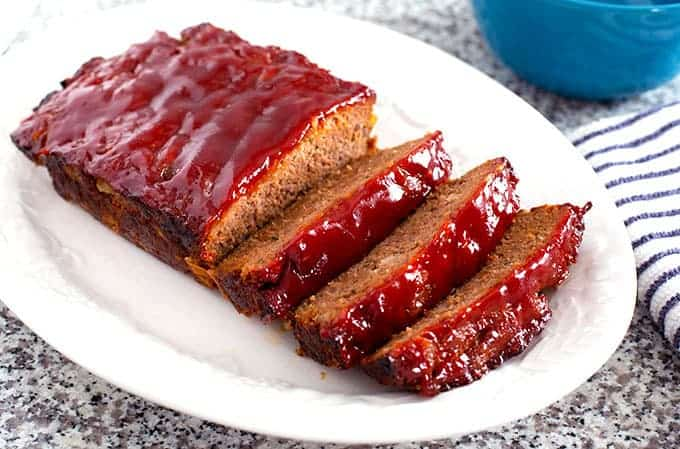

Back to homepage
Meatloaf
Original recipe found at https://www.thewholesomedish.com/the-best-classic-meatloaf/

Ingredients
- 1 lb. 90% lean ground beef
- 1 cup dried bread crumbs
- 1/2 cup diced yellow onion
- 1/2 cup milk
- 1 large egg beaten
- 2 tbsp. ketchup
- 1 tbsp. Worcestershire sauce
- 1 tsp. dried parsley leaves
- 3/4 tsp. salt
- 1/2 tsp. garlic powder
- 1/4 tsp. ground black pepper
- For the Topping:
- 1/4 cup ketchup
- 2 tbsp. packed light brown sugar
- 1 tbsp. red wine vinegar
- (Optional: a few strips of bacon to top the meatloaf
Instructions
- Preheat oven to 350 degrees Fahrenheit.
- Sauteed diced onion with a little oil and a pinch of sugar until clear then cool.
- Add the beef, bread crumbs, onion, milk, egg, 2 tablespoons ketchup, Worcestershire sauce, parsley, salt, garlic powder, and pepper in a large bowl. Use your hands to mush and mix these ingredients together until well combined
- Add the meat mixture to a loaf pan. Pat the meat down into an even layer.
- In a small bowl, add 1/4 cup ketchup, brown sugar, and vinegar. Stir to combine. Pour the sauce on top of the meatloaf and spread it into an even layer.
- Bake uncovered for 55 minutes.
- Let the meatloaf rest for 8-10 minutes before serving (or it may fall apart).
- Transfer the meatloaf onto a cutting board or leave in the loaf pan, slice, serve, and enjoy!